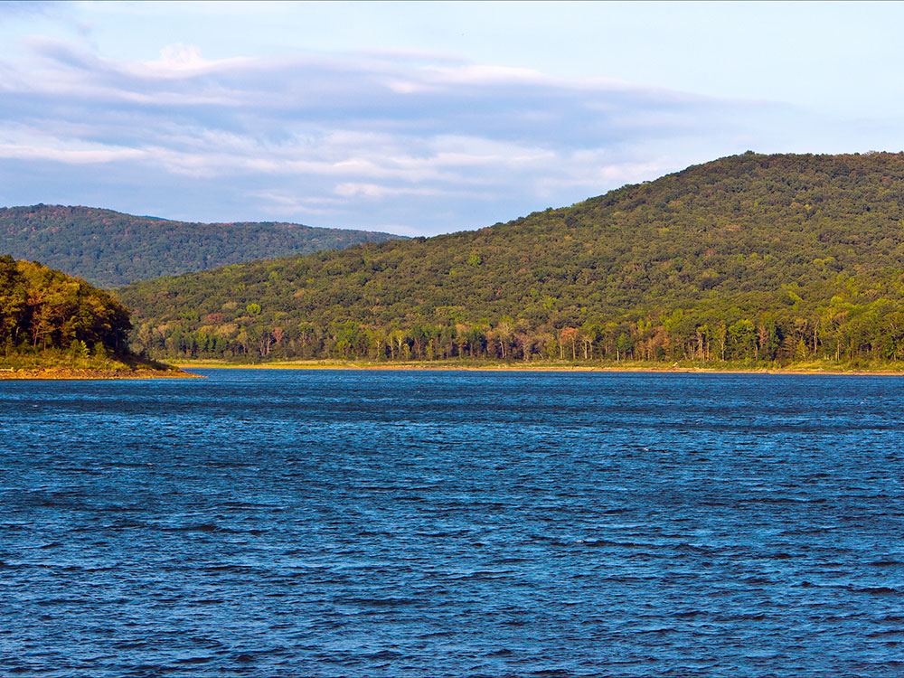
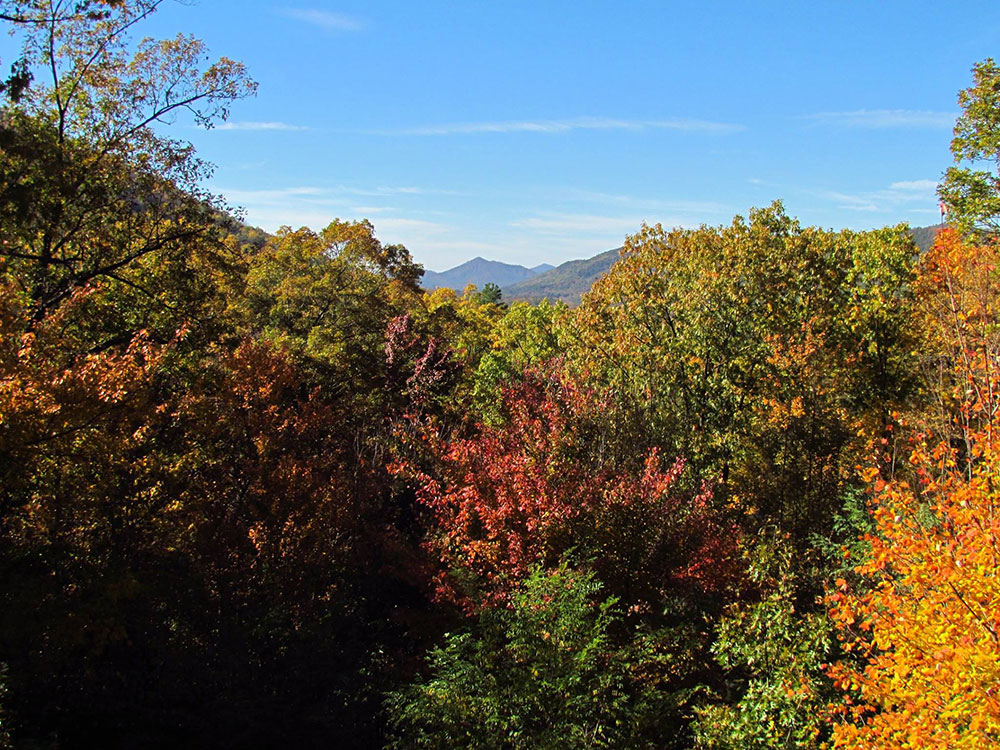
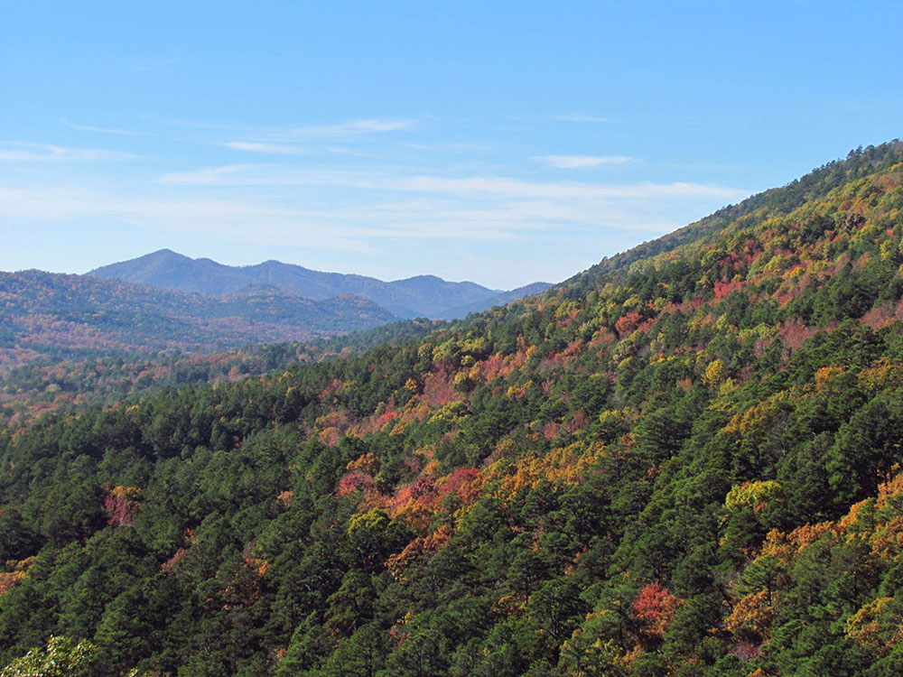

General Information
How to Get There
Overview
The Ouachita Mountains are a mountain range in western Arkansas and southeastern Oklahoma. They are formed by a thick succession of highly deformed Paleozoic strata constituting the Ouachita Fold and Thrust Belt, one of the important orogenic belts of North America. The Ouachitas continue in the subsurface to the northeast, where they make a poorly understood connection with the Appalachians and to the southwest, where they join with the Marathon uplift area of West Texas. Together with the Ozark Plateaus, the Ouachitas form the U.S. Interior Highlands. The highest natural point is Mount Magazine at 2,753 feet.
The Ouachita Mountains is a Level III ecoregion designated by the Environmental Protection Agency (EPA). The region has been subdivided into six Level IV ecoregions.
Louis R. Harlan claimed that "Ouachita" is composed of the Choctaw words ouac for "buffalo" and chito for "large", together meaning "country of large buffaloes". At one time, herds of buffalo inhabited the lowland areas of the Ouachitas. Historian Muriel H. Wright wrote that "Ouachita" is composed of the Choctaw words owa for "hunt" and chito for "big", together meaning "big hunt far from home". According to the article Ouachita in the Encyclopedia of Oklahoma History and Culture, "Ouachita" comes from the French spelling of the Caddo word washita, meaning "good hunting grounds".
The Ouachitas are a major physiographic province of Arkansas and Oklahoma and are generally grouped with the Arkansas River Valley. Together with the Ozark Plateaus, the Ouachitas form the U.S. Interior Highlands, one of few mountainous regions between the Appalachians and Rockies.
The Ouachitas are dominated by pine, oak, and hickory. The shortleaf pine (Pinus echinata) and post oak (Quercus stellata) thrive in dry, nutrient-poor soil and are common in upland areas. The maple-leaf oak (Quercus acerifolia) is found at only four sites worldwide, all of which are in the Ouachitas. Some native tree species, such as the eastern red-cedar (Juniperus virginiana), are colonizers of human-disturbed sites.
The Ouachita National Forest covers approximately 1.8 million acres of the Ouachitas. It is one of the largest and oldest national forests in the Southern U.S., created through an executive order by President Theodore Roosevelt on December 18, 1907. There are six wilderness areas within the Ouachita National Forest, which are protected areas designed to minimize the impacts of human activities.
Several plants are endemic to the Ouachitas, including: Agalinis nuttallii, Cardamine angustata var. ouachitana, Carex latebracteata, Galium arkansanum var. pubifolium, Houstonia ouachitana, Hydrophyllum brownei, Liatris compacta, Quercus acerifolia, Polymnia cossatotensis, Solidago ouachitensis, Spiranthes niklasii (near endemic, also found on Crowley's Ridge), Streptanthus maculatus subsp. obtusifolius, Streptanthus squamiformis, Valerianella palmerii, and Vernonia lettermanii.
The Athens Plateau or Athens Piedmont (EPA Level IV ecoregion 36a) consists of a series of low relief ridges, none exceeding 1,000 feet. It is located south of the Ouachitas and extends from to the Arkansas-Oklahoma border. The Athens Piedmont runs from Arkadelphia, Arkansas into Oklahoma through Clark, Howard, Pike, and Sevier counties in Arkansas and McCurtain County in Oklahoma. The ecoregion's low ridges and hills are widely underlain by Mississippian Stanley Shale in contrast to other parts of the Ouachitas. Today, pine plantations are widespread; they are far more extensive than in the more rugged parts of the Arkansas Ouachitas. Pastureland and hayland also occur.
The Caddo, Cossatot, and Missouri mountains are a high, compact group of mountains composed of the weather-resistant Arkansas Novaculite. They are located primarily in Montgomery and Polk counties, Arkansas. The highest natural point is Raspberry Mountain at 2,358 feet. The headwaters of multiple rivers are found in this area, including the Caddo, Cossatot, and Little Missouri rivers.
The Cross Mountains are located in Polk and Sevier counties, Arkansas and McCurtain County, Oklahoma. The highest natural point is Whiskey Peak at 1,670 feet.
The Crystal Mountains are located primarily in Montgomery County, Arkansas. They are so named because of the occurrence of some of the world's finest quartz. The Crystal Mountains are generally taller than the nearby Zig Zag Mountains, achieving elevations over 1,800 feet.
The Fourche Mountains are a long, continuous chain of east-west mountains composed of the weather-resistant Jackfork Sandstone. They extend from Pulaski County, Arkansas to Atoka County, Oklahoma and are home to several popular sites of interest, including Pinnacle Mountain State Park near Little Rock, Arkansas. The highest natural point is Rich Mountain at 2,681 feet, which intersects the Arkansas-Oklahoma border near Mena, Arkansas.
The Fourche Mountains are the archetypal Ouachita Mountains. Forested ridges are heavily forested with oak-hickory-pine forest; intervening valleys are cut into shale. Ridges are longer, habitat continuity is greater, the lithologic mosaic is different, and the topographic orientation is more consistent than in other parts of the Ouachitas. Differences in moisture and temperature between north- and south-facing slopes significantly influence native plant communities; they are products of the prevailing topographic trend. Forests on steep, north-facing slopes are more mesic than on southern aspects; the steepest, south-facing slopes contain shallow, moisture deficient soils supporting shrubs and rocky glades or grassy woodlands.
The Fourche Mountains form a major watershed divide between the Arkansas River Basin to the north and the Red River Basin to the south.
The Frontal Ouachita Mountains are located in the Arkansas River Valley and feature a number of isolated landforms. The highest natural point is Mount Magazine at 2,753 feet, which is also the highest natural point of the Ouachitas and U.S. Interior Highlands. The Frontal Ouachita Mountains are structurally quite different from the rest of the Ouachitas and are sometimes considered a separate range.
The Trap Mountains are located primarily in Garland and Hot Spring counties, Arkansas. The highest natural point is Trap Mountain at 1,310 feet.
The Zig Zag Mountains are located in Garland County, Arkansas and are home to the thermal springs of Hot Springs National Park. They are so named because of their unique chevron shape when viewed from above, the result of plunging anticlines and synclines. The Zig Zag Mountains are not exceptionally tall, but do reach heights over 1,400 feet.
The Ouachitas are formed by a thick succession of highly deformed Paleozoic strata constituting the Ouachita Fold and Thrust Belt, which crops out for approximately 220 miles in western Arkansas and southeastern Oklahoma. In a general sense, the Ouachitas are considered an anticlinorium because the oldest known rocks are located towards the center of the outcrop area. The Ouachitas continue in the subsurface to the Black Warrior Basin of Alabama and Mississippi where they plunge towards the Appalachian Mountains. To the southwest, the Ouachitas join with the Marathon area of west Texas where rocks of the Ouachita Fold and Thrust Belt are briefly exposed.
Unlike many ranges in the United States, the Ouachitas are mostly east-west trending. They are unique because metamorphism and volcanism, features that are common in orogenic belts, are notably absent (with the exception of some low-grade metamorphism). Due to the high degree of folding and faulting, the Ouachitas are clustered into distinct subranges, with ridges separated by relatively broad valleys.
The Ouachita Mountains contain the Ouachita National Forest, Hot Springs National Park and Lake Ouachita, as well as numerous state parks and scenic byways mostly throughout Arkansas. They also contain the Ouachita National Recreation Trail, a 223-mile-long (359 km) hiking trail through the heart of the mountains. The trail runs from Talimena State Park in Oklahoma to Pinnacle Mountain State Park near Little Rock. It is a well maintained, premier trail for hikers, backpackers, and mountain bikers (for only selected parts of the trail).
The Talimena Scenic Drive begins at Mena, and traverses 54 miles (87 km) of Winding Stair and Rich Mountains, long narrow east-west ridges which extend into Oklahoma. Rich Mountain reaches an elevation of 2,681 feet (817 m) in Arkansas near the Oklahoma border. The two lane winding road is similar in routing, construction, and scenery to the Blue Ridge Parkway of the Appalachian Mountains.
- Beavers Bend State Park
- Black Fork Mountain Wilderness
- Caney Creek Wilderness
- Cossatot River State Park-Natural Area
- Flatside Wilderness
- Hot Springs National Park
- Jack Creek Recreation Area
- Lake Catherine
- Lake Hamilton
- Lake Maumelle
- Lake Ouachita
- Mount Magazine State Park
- Pinnacle Mountain State Park
- Queen Wilhelmina State Park
- Mount Nebo State Park
This article uses material from the Wikipedia article "Ouachita Mountains", which is released under the Creative Commons Attribution-Share-Alike License 3.0




